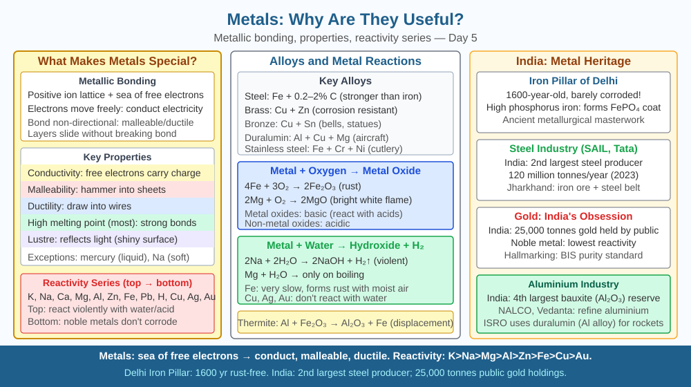

By the end of this lesson, you should be able to explain metallic bonding using the electron sea model, connect that model to conductivity, malleability, and ductility, and predict what happens to a metal's electrical conductivity if its free electrons are removed.
Copper wires carry electricity to every socket in your home. Gold foil can be beaten so thin that light passes through it. Steel cables on the Bandra–Worli Sea Link stretch without snapping under enormous load. All of these feats are performed by metals — and they all trace back to one invisible feature inside the metal that you cannot see with a naked eye. What is it, and how does a single structural idea explain conductivity, malleability, and ductility simultaneously?
At the heart of every metal is metallic bonding — a type of bonding completely different from ionic or covalent bonding. To understand it, picture the arrangement inside a lump of copper.
The electron sea model. Each copper atom has one valence electron that it holds loosely. In a solid metal, these outermost electrons detach from their parent atoms and move freely through the entire structure. The result is a regular lattice of positively charged metal ions (Cu⁺ in the case of copper) sitting in a "sea" of delocalised — meaning unowned — electrons. The electrons are not bound to any single ion; they belong to the whole piece of metal.
This model directly explains three defining properties of metals.
Conductivity. When you connect a copper wire to a battery, the battery creates a potential difference — a push. The delocalised electrons, being free to move, respond immediately: they drift from the negative terminal toward the positive terminal as a continuous current. In an ionic or covalent solid, all electrons are locked in bonds or between specific atoms and cannot drift freely; those materials do not conduct electricity. The free electrons are therefore the direct cause of metallic conductivity. Temperature matters here: raising the temperature causes the lattice ions to vibrate more intensely. Those vibrations scatter the moving electrons, increasing resistance and decreasing conductivity — which is why a tungsten filament in a light bulb heats up and glows. Introducing impurity atoms (a different element in the lattice) also disrupts the regular arrangement and scatters electrons, which is why pure copper conducts better than brass (copper-zinc alloy).
Malleability. A metal can be beaten into sheets — think of gold beaten into the thin foil used in Indian sweets like barfi. When a force is applied, the layers of positive ions slide over each other. Because the electron sea is uniform throughout the structure, it re-forms around the ions in their new positions and continues to hold them together. No bonds "break" the way they would in ionic crystals (which shatter). The metal simply reshapes.
Ductility. The same sliding mechanism allows metals to be drawn into wires. Copper and aluminium are drawn into thin electrical cables; Tata Steel produces steel wire rods pulled through progressively smaller dies. The layers glide, the electron sea adjusts, and the metal stretches into a long, thin shape without fracturing.
Iron, copper, aluminium, and gold all share this electron-sea structure, which is why all metals share these characteristic properties to varying degrees.
Think of a metal's interior as a ball-pit with rolling marbles:
When you tilt the pit (apply a voltage), all marbles roll in one direction — that is electrical current. When you press the pit from one side (apply mechanical force), the balls slide to new positions but the marbles still fill the gaps — that is malleability. When you stretch the pit into a tube, the balls form a long column and the marbles still surround them — that is ductility.
Key cause-and-effect chain: - Metallic bonding → delocalised electrons → free to move → conductivity - Metallic bonding → layers of ions → slide without breaking → malleability and ductility
The included SVG shows a cross-section of a copper lattice with:

Pure copper wire conducts electricity far better than nichrome wire (an alloy of nickel and chromium), even though both are metals. Both have delocalised electrons — so why the difference?
In nichrome, nickel and chromium atoms of different sizes disrupt the regular lattice. These irregular sites scatter the moving electrons more frequently, increasing resistance. Nichrome is therefore deliberately used in electric heaters (toasters, room heaters) precisely because its high resistance converts electrical energy into heat efficiently.
Predict: If you gradually increased the temperature of a copper wire from 20°C to 200°C, what would happen to its electrical resistance? Give a reason based on what happens to lattice ion vibrations at higher temperatures, and state what this implies about the wire's current-carrying capacity if the voltage stays constant.
Which property of metals makes them useful for electrical wiring?
Correct answer: c
Why is understanding the metallic bonding mechanism more useful than listing metal uses?
Correct answer: c
What would happen to a metal's conductivity if its free electrons were removed?
Correct answer: c
Explain today's concept to a younger student in 60 seconds without technical jargon. Then explain it again using the correct scientific vocabulary.
If both explanations describe the same mechanism, you have understood the concept rather than memorised it.
Gold is so malleable that a single gram can be beaten into a sheet roughly one square metre in area — thin enough that light passes through it with a greenish tinge. The electron sea is so effective at holding the ions together even after displacement that the metal never snaps. Goldsmiths in India have exploited this for millennia without knowing the electron sea model; the physics was always there, waiting for a name.
Metals conduct electricity and can be bent or drawn into wires because their outermost electrons are delocalised — free to drift as current when voltage is applied and free to re-form around ions when layers slide, making the electron sea the single explanation behind conductivity, malleability, and ductility.